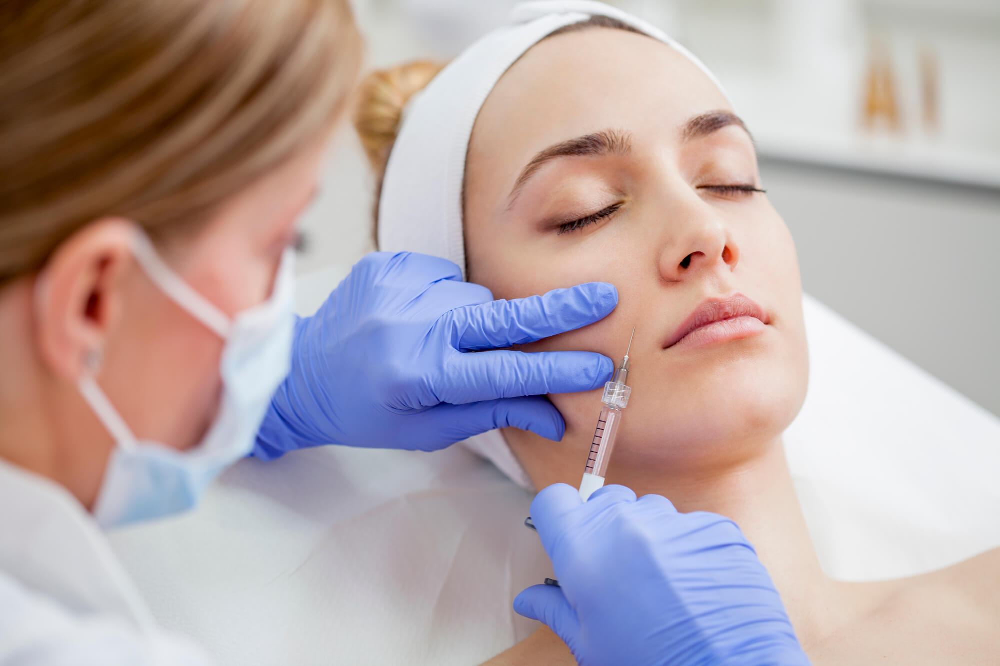
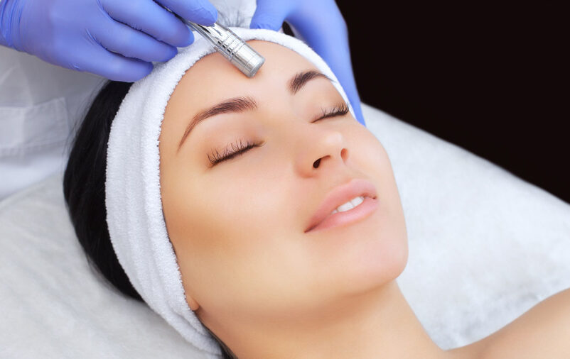
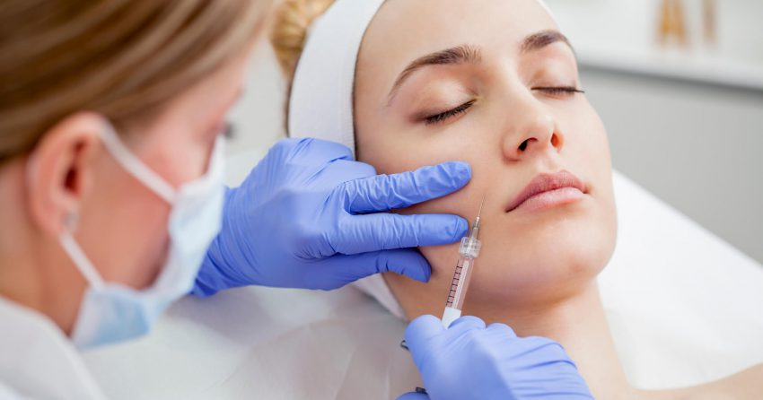
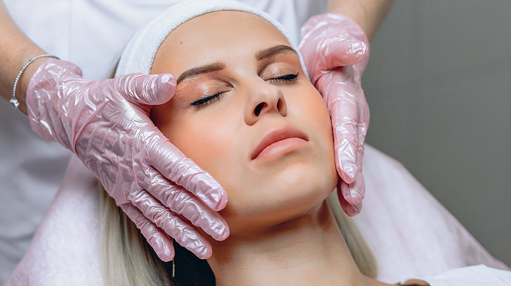
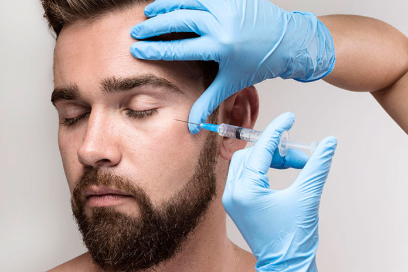

Harmonização facial com naturalidade, precisão e segurança.
Recupere o contorno, a firmeza e a confiança sem exageros.
Clique abaixo e agende a sua avaliação
Por que escolher a Dra. Roberta Verçosa?
Protocolos sutis que valorizam a harmonia e expressão individual
Sem pressa, com avaliação detalhada e foco total no paciente
Ambiente controlado, esterilização rigorosa e materiais de alta qualidade
Especialista em HOF, professora, palestrante e delegada da SBTI
Referência em harmonização estética e funcional da face
Procedimentos e Tratamentos
|  | Toxina Botulínica (Botox) Relaxa linhas de expressão, previne envelhecimento e controla bruxismo, espasmos, sialorreia e neuralgia do trigêmeo |
|  | Preenchimento Facial e Labial Restaura volume, define contornos e equilibra proporções faciais |
|  | Bio Estimulador de Colágeno Estimula colágeno profundo, melhora firmeza e textura |
|  | Ultrassom Microfocado Promove neo formação de colágeno, lifting não cirúrgico, melhora de contorno e da flacidez |
|  | Microagulhamento Regenerativo Rejuvenescimento leve e melhora de manchas e textura, promovendo o colágeno superficial |
Sobre a Dra. Roberta Verçosa
Harmonização Natural com Propósito
A Dra. Roberta Verçosa é cirurgiã-dentista especialista em harmonização orofacial, professora e delegada da Sociedade Brasileira de Toxina Botulínica e Implantes Faciais (SBTI) em Pernambuco. Com uma abordagem centrada na beleza natural e na ciência da harmonia, atua com protocolos personalizados para cada paciente, valorizando a individualidade sem exageros.
Com vasta experiência na aplicação da toxina botulínica terapêutica, tornou-se referência nacional participando de entrevistas sobre o assunto em podcasts, tv e imprensa escrita.
Como funciona o seu atendimento personalizado
- Agendamento — Agendamento pelo WhatsApp
- Avaliação individualizada — Avaliação com a Dra. Roberta, analisando proporções, histórico e necessidades
- Planejamento personalizado — Orientações e indicações precisas para o seu caso
- Aplicação — Técnicas avançadas com foco em naturalidade
- Acompanhamento — Acompanhamento pós-procedimento, garantindo segurança e resultados harmônicos
FAQ – Perguntas Frequentes
É possível ter resultados naturais sem ficar “artificial”?
Sim, a Dra. Roberta segue protocolo próprio de harmonização natural e equilibrada, respeitando a anatomia individual
Os procedimentos são dolorosos?
A maioria é minimamente invasiva e utiliza anestesia local ou tópica para garantir conforto
Qual a duração dos resultados?
Depende do procedimento e do organismo, mas em média de 4 a 18 meses
Posso tratar condições médicas com botox?
Sim. Além da estética, a toxina é utilizada para casos como bruxismo, neuralgia do trigêmeo, cefaleia, sialorreia e espasmos hemifaciais
Localização
Atendimento individual e exclusivo com hora marcada.
Contato & Agendamento
Endereço: Empresarial Casa Grande Rosa e Silva - Av. Conselheiro Rosa e Silva, 1206 sala 604 - Aflitos, Recife - PE, 52050-345
WhatsApp: +55 (XX) XXXXX-XXXX
Atendimento: Individual e exclusivo com hora marcada.
E-mail: contato@example.com
Cuide da sua beleza com quem entende de naturalidade.
Agende agora sua avaliação e descubra como realçar o melhor de você com segurança e elegância.